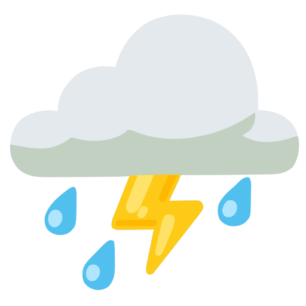

<div class="header">
    <div class="pure-g">
        <div class="pure-u-1 header-flex">
            <h2 id="title">
                <a href="/">
                    
                    BarnaPluja
                </a>
            </h2>
            <button class="hamburger" id="hamburger-menu" aria-label="Toggle menu" aria-expanded="false"
                    aria-controls="main-menu">
                <span></span>
                <span></span>
                <span></span>
            </button>
            <nav class="pure-menu pure-menu-horizontal responsive-menu" id="main-menu">
                <ul class="pure-menu-list">
                    <li class="pure-menu-item">
                        <a href="https://opendata-ajuntament.barcelona.cat/data/en/dataset/precipitacio-hist-bcn"
                           target="_blank" class="pure-menu-link highlight-link">Source data</a>
                    </li>
                    <li class="pure-menu-item">
                        <a href="/rainfall_by_year" class="pure-menu-link">Every year</a>
                    </li>
                    <li class="pure-menu-item">
                        <a href="/rainfall_average" class="pure-menu-link">On average</a>
                    </li>
                    <li class="pure-menu-item">
                        <a href="/rainfall_standard_deviation" class="pure-menu-link">Standard
                            deviation</a>
                    </li>
                    <li class="pure-menu-item">
                        <a href="/rainfall_relative_distance_to_normal" class="pure-menu-link">Relative distance
                            to
                            normal</a>
                    </li>
                    <li class="pure-menu-item">
                        <a href="/years_compared_to_normal" class="pure-menu-link">Years compared to normal</a>
                    </li>
                    <li class="pure-menu-item">
                        <a href="/openapi" target="_blank" class="pure-menu-link highlight-link">API</a>
                    </li>
                </ul>
            </nav>
            <button class="theme-switch" id="theme-switch" aria-label="Toggle light/dark mode">
                <span id="sun" aria-hidden="true">
                  <svg viewBox="0 0 24 24" fill="none" stroke="currentColor" stroke-width="2" stroke-linecap="round" stroke-linejoin="round"><circle cx="12" cy="12" r="5"/><g><line x1="12" y1="1" x2="12" y2="3"/><line x1="12" y1="21" x2="12" y2="23"/><line x1="4.22" y1="4.22" x2="5.64" y2="5.64"/><line x1="18.36" y1="18.36" x2="19.78" y2="19.78"/><line x1="1" y1="12" x2="3" y2="12"/><line x1="21" y1="12" x2="23" y2="12"/><line x1="4.22" y1="19.78" x2="5.64" y2="18.36"/><line x1="18.36" y1="5.64" x2="19.78" y2="4.22"/></g></svg>
                </span>
                <span id="moon" aria-hidden="true">
                  <svg viewBox="0 0 24 24" fill="none" stroke="currentColor" stroke-width="2" stroke-linecap="round" stroke-linejoin="round"><path d="M21 12.79A9 9 0 1 1 11.21 3a7 7 0 0 0 9.79 9.79z"/></svg>
                </span>
            </button>
        </div>
    </div>
</div>